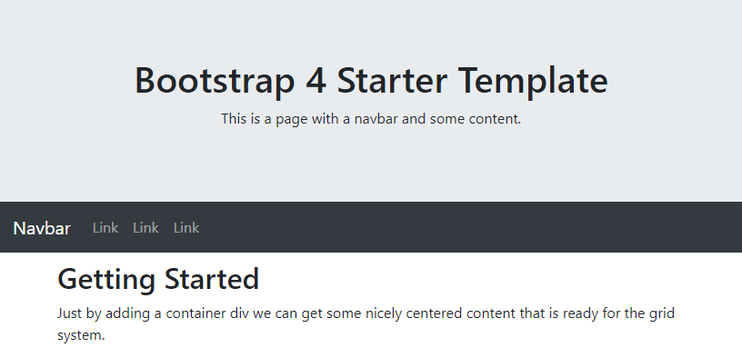

A CSS framework is a bundle of CSS that creates a consistent theme across an HTML UI. A CSS framework can optionally include JavaScript. Some CSS frameworks are opt-in. They require adding a class to trigger a style. Others are not opt-in. When we link to the CSS bundle, our HTML is automatically styled via element selectors. Most CSS frameworks are a bit of both. Typography is not opt-in, creating a navigation bar is, etc.
CSS frameworks also support responsive design. Responsive design is a goal to make HTML render well on all screen sizes. Responsive design also aims for strong usability across devices. A user should be able to touch on a phone or click their mouse on a laptop and have roughly the same experience.
As a concrete example, we will demonstrate Twitter's Bootstrap framework.
https://getbootstrap.com/docs/5.2/getting-started/introduction/
When you've finished this lesson and its exercises, you should be able to:
Browse to the css-frameworks directory in our cohort-46 repository.
Pull the cohort-46 repo or clone if you don't have it.
css-frameworks is a directory of HTML documents, each styled with Bootstrap. Open each document in
VS Code and a browser when directed.
Framework developers already resolved incompatibilities across major browsers. This speeds up design time and reduces testing and troubleshooting.
Components are isolated interface elements and behaviors that go beyond basic HTML.
Examples include animating a series of images to make an image carousel, composing multiple HTML elements into a navigation bar, or displaying a fancy tooltip on hover.
When a framework is popular, community developers extend it. This can include additional components or theme variations.
Using a framework's defaults can make your UI look the same as many others. Depending on your use case, that can be very bad.
It an be difficult to customize styles because frameworks have big opinions. If we override a framework's class, the results can impact elements that we didn't intend to change. If we create new classes, it is difficult to enforce styles because of CSS specificity.
Bootstrap has several installation options: https://getbootstrap.com/docs/5.2/getting-started/download/.
We can download Bootstrap's CSS and JavaScript files or install with a package manager like npm.
We'll skip these steps and link Bootstrap's CSS and JavaScript via CDN (Content Delivery Network). A CDN is a secure server (or servers) that hosts shared resources. Open source web libraries and frameworks are almost always available via CDN. CDNs also save on bandwidth since we're not hosting the resources ourselves.
Open the bootstrap-minimum.html file from the css-frameworks directory in VS Code (see
Set Up).
The Bootstrap CSS link goes inside the <head> element. The JavaScript
<script> goes immediately before the closing </body> tag.
<!DOCTYPE html>
<html lang="en">
<head>
<meta charset="UTF-8">
<meta name="viewport" content="width=device-width, initial-scale=1.0">
<!-- CSS -->
<link href="https://cdn.jsdelivr.net/npm/bootstrap@5.2.2/dist/css/bootstrap.min.css" rel="stylesheet"
integrity="sha384-Zenh87qX5JnK2Jl0vWa8Ck2rdkQ2Bzep5IDxbcnCeuOxjzrPF/et3URy9Bv1WTRi" crossorigin="anonymous">
<title>Bootstrap Minimum Template</title>
</head>
<body>
<!-- JavaScript Bundle with Popper -->
<script src="https://cdn.jsdelivr.net/npm/bootstrap@5.2.2/dist/js/bootstrap.bundle.min.js"
integrity="sha384-OERcA2EqjJCMA+/3y+gxIOqMEjwtxJY7qPCqsdltbNJuaOe923+mo//f6V8Qbsw3"
crossorigin="anonymous"></script>
</body>
</html>
Open the bootstrap-starter-template.html file in VS Code. Note the standard placement of the CSS
link and JavaScript script.
Open the file in a browser. We should see a banner, Navbar, and the default Bootstrap styling.

The starter template uses utility classes to style the banner.
<div class="p-5 mb-4 bg-light rounded-3">
<div class="container-fluid py-5 text-center">
<h1 class="display-5 fw-bold">Bootstrap 5 Starter Template</h1>
<p class="col fs-4">This is a page with a navbar and some content.</p>
</div>
</div>
Samples:
p-5: padding inside the box, the value "5" is the largest value in the range 1-5.mb-4: add margin to the bottom, the value "4" is the second largest value.text-center: centers all text in this div.fw-bold: font weight bold.The Navbar component is a responsive navigation bar that collapses to a "hamburger" menu on small screens.
<nav class="navbar navbar-expand-sm bg-dark navbar-dark">
<div class="container-fluid">
<a class="navbar-brand" href="#">Navbar</a>
<button class="navbar-toggler" type="button" data-bs-toggle="collapse" data-bs-target="#collapsibleNavbar">
<span class="navbar-toggler-icon"></span>
</button>
<div class="collapse navbar-collapse" id="collapsibleNavbar">
<ul class="navbar-nav">
<li class="nav-item">
<a class="nav-link" href="#">Link</a>
</li>
<li class="nav-item">
<a class="nav-link" href="#">Link</a>
</li>
<li class="nav-item">
<a class="nav-link" href="#">Link</a>
</li>
</ul>
</div>
</div>
</nav>
Navbar is one of the components that requires JavaScript. JavaScript opens and closes the hamburger menu. We don't
write the JavaScript explicitly, it's activated with the data-bs-toggle and data-bs-target
attributes.
Shrink your view to activate the hamburger menu.
Bootstrap defines six responsive breakpoints. based on CSS media queries. Breakpoints are view widths where Bootstrap makes a decision
It uses container classes to surround content and limit a max width. It has a variety of container classes which
can be attached to block elements (usually <div> elements). The two primary container classes you
will use are container which sets a max-width at each responsive breakpoint and
container-fluid which stretches to 100% width at all responsive breakpoints.
Bootstrap has a variety of responsive breakpoints that are defined in its CSS by media queries. In CSS a media query is used when you want to modify your application's appearance based on things like screen resolution.
We do not cover media queries in this course because it is more of a concern for designers, not developers. What you need to know is that Bootstrap CSS classes sometimes append codes like sm, md, lg, , xl, and fluid which refer to how an element should behave given screen size. Size breakpoints are as follows:
| Class | Small | Medium | Large | Extra Large |
|---|---|---|---|---|
| >=576px | >=768px | >=992px | >=1200px | |
| sm | 540px | 720px | 960px | 1140px |
| md | 100% | 720px | 960px | 1140px |
| lg | 100% | 100% | 960px | 1140px |
| xl | 100% | 100% | 100% | 1140px |
| fluid | 100% | 100% | 100% | 100% |
Given the table and sizes above, this means if you have a <div> element with a class of
container-md, it will be 100% width if the screen size (or browser window size) is shorter than 768px
wide. It will maintain a width of 720px from 768px to 991px wide, grow to 960px from 992px to 1199px wide and grow
to 1140px wide for any resolutions that are 1200px or more. This is why the content in our example above was
centered.
The basic container class behaves like the
container-smclass as far as sizing is concerned.
For quick reference, see the responsive-containers.html example.
Bootstrap is built around the flexbox layout.
One of the major selling points of Bootstrap is the ease of building layouts using their grid system. The recommended way to lay out your content in Bootstrap is to think about "mobile-first" and design content that scales up nicely to larger screens.
To use the grid system, you must wrap your content in one of the container classes we discussed above,
and then you can add rows and columns using the row and col classes.
See the
columns.html example file.
The simplest example is when you want equal-sized columns across all screen widths. For that, you can simply use
the col class directly. For example, let's say we wanted two equal-width columns across all screen
sizes:
<div class="container">
<div class="row">
<div class="col">
This content is in the left column and will take up 50% width at all screen resolutions.
</div>
<div class="col">
This content is in the right column and will take up 50% width at all screen resolutions.
</div>
</div>
</div>
It's as simple as that! If you wanted a 3 column layout, simply add a third <div>. Each
additional col class will add another equally sized column to the row.
You can also specify relative sizes of columns by appending a number to the col class. In Bootstrap,
the grid system is based on 12 columns. So, let's say we wanted to have 3 columns, with the middle
column being half the width of the screen and the two side columns dividing the rest equally:
<div class="container">
<div class="row">
<div class="col">column 1</div>
<div class="col-6">column 2</div>
<div class="col">column 3</div>
</div>
</div>
Column 2 has a class of col-6, since 6 is half of 12 (yes there is math in this course), then it will
be 50% width of the screen. The other two columns have no numeric specifier, so it will divide the remaining width
(50%) in half, giving them both equal widths of 25%.
One of the neat tricks you can do with the grid system is appending a size designation to a col class
along with the number. This allows the columns to "collapse" into full width at certain screen size breakpoints. For
example, let's say we wanted 3 columns on a large screen, 2 on a medium screen, and for the columns to stack
vertically on smaller screens. We can do something like this:
<div class="container">
<div class="row">
<div class="col">Row 1, always 100% width</div>
</div>
<div class="row">
<div class="col-sm-12 col-md-6 col-lg-4">100% sm, 50% md, 33% lg</div>
<div class="col-sm-12 col-md-6 col-lg-4">100% sm, 50% md, 33% lg</div>
<div class="col-sm-12 col-md-6 col-lg-4">100% sm, 50% md, 33% lg</div>
</div>
</div>
If you resize the example file in the browser you will see that when large, it will be three columns as expected, but if you shrink it to medium it will be 2 columns, with the third dropping down a line and when small-sized all 3 columns will stack at 100% width. This is a great way to structure your content to display nicely on all sizes of devices!
This is just scratching the surface of what the grid classes are capable of. Once you understand the responsive breakpoints and keep in mind the 12 column structure, with a little planning you will be capable of creating most of the layouts that are common in application development. You can learn more about the grid system in the Bootstrap documentation here: Bootstrap Grid Layout Documentation.
You can find the tables documentation here: Bootstrap Tables Documentation
Bootstrap tables are quick to develop. Bootstrap doesn't change a table unless we apply a Bootstrap class. We can flexibly provide different looks and feels to the tables in our applications.
In the tables.html example file, we demonstrate how quickly we can apply a similar look and feel to a
table using the Bootstrap table, table-dark, and table-striped classes:
Notice where we apply the table-dark class. It can be applied at the table level, the
thead/tbody level, row level, or th/td level. In our example, we
apply table-dark to the thead and then again in the footer's th. To right
align our footer header, we use the text-end utility class.
Again, it's the speed of development that Bootstrap brings. We could write our own styles as we did in the previous lesson, but with Bootstrap, we can get a nice looking table styled in 30 seconds.
You can find forms documentation here: Bootstrap Forms Documentation
See the
form.html example file.
Forms have a variety of styles and extra features. Getting started with the basics is simply
a matter of giving our <div> elements some room to breathe with the mb-3 class
(margin-bottom) and decorating each control with the form-control class.
For our button, there are named styles found here: Bootstrap Buttons Documentation. We went with the primary, large button. The result is a nice, responsive, mobile-friendly form:
We have only scratched the surface of what Bootstrap brings to the table. Take some time to review the documentation, especially the components since Bootstrap is the most common CSS framework in use today. You are likely to encounter it frequently.
The JavaScript files that are linked to Bootstrap are utilized for some very interesting effects like toasts and carousel controls that can help give your application a more polished look and feel.
Beyond Bootstrap, have a look at some other popular CSS Frameworks such as Foundation, which is used by Facebook, eBay, Mozilla, Adobe, and Disney. some other popular frameworks are Pure and Bulma. As you can see, there are many choices for CSS Frameworks and they all have their strengths and weaknesses. It generally makes sense to specialize in one, but at least be aware of one or two others.